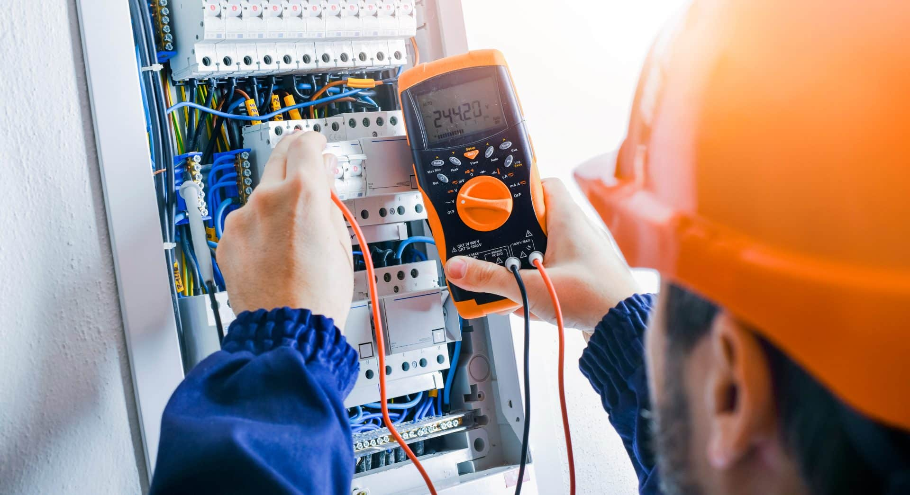
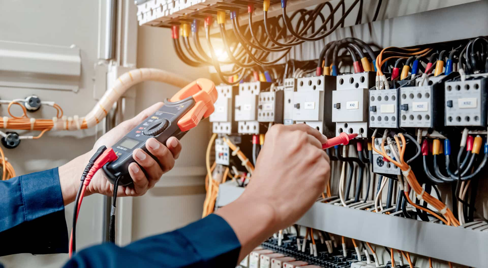

Sectoren
Installatie; Efficiëntie en kwaliteit in techniek en techniekprojecten
De sector installatietechniek heeft te maken met complexe projecten, strakke deadlines en hoge kwaliteitsstandaarden. Of het nu gaat om elektrotechniek, werktuigbouw, klimaatsystemen of complete gebouwinstallaties: betrouwbare processen zijn cruciaal om projecten succesvol af te ronden. Digitalisering maakt het mogelijk om projecten beter te plannen, resources efficiënter in te zetten en de samenwerking met klanten en ketenpartners te optimaliseren.
Bij DIS Group combineren we onze kennis van de installatiebranche met expertise in Microsoft Business Central en 4PS Construct. Hierdoor helpen we installatiebedrijven processen te stroomlijnen in hun erp systeem, grip te krijgen op projecten en tegelijkertijd de klanttevredenheid te verhogen.
Neem contact op

Waarom digitaliseren in de installatiebranche?
Installatieprojecten hebben vaak te maken met meerdere partijen, complexe planningen en veel technische gegevens. Zonder goede digitale ondersteuning ontstaan fouten, vertragingen en inefficiënties. Door alle processen te integreren in één platform:
- krijg je realtime inzicht in projecten en kosten;
- plan en beheer je mensen en materieel efficiënter;
- verbeter je communicatie met klanten en ketenpartners;
- verminder je administratieve lasten en verhoog je de productiviteit.
Hoe DIS Group installatiebedrijven ondersteunt
Onze onafhankelijke en praktische aanpak zorgt dat digitale oplossingen écht werken voor jouw organisatie:
- Integrale project- en procesoptimalisatie
Van calculatie, planning en projectbewaking tot financiële administratie en service, alles geïntegreerd in één platform. - Betrouwbare calculatie en resourceplanning
Onze tools helpen bij het maken van nauwkeurige kostencalculaties en het optimaal inzetten van mensen en materialen. - Klant- en ketencommunicatie
Door klantportalen en digitale samenwerkingsplatforms te gebruiken, zijn projectstatus en meldingen altijd inzichtelijk voor alle betrokkenen. - Heldere rapportages en analyses
Dashboards geven direct inzicht in prestaties, voortgang en financiële status, ondersteund door Microsoft Power BI waar nodig. - Optimalisatie van financiële processen
Facturatie, budgetbewaking en financiële administratie sluiten naadloos aan bij projectdata, zodat je sneller en slimmer kunt sturen.
Met onze begeleiding werken installatiebedrijven efficiënter, veiliger en klantgerichter, en zijn ze klaar zijn voor de uitdagingen van de toekomst.
Neem contact op